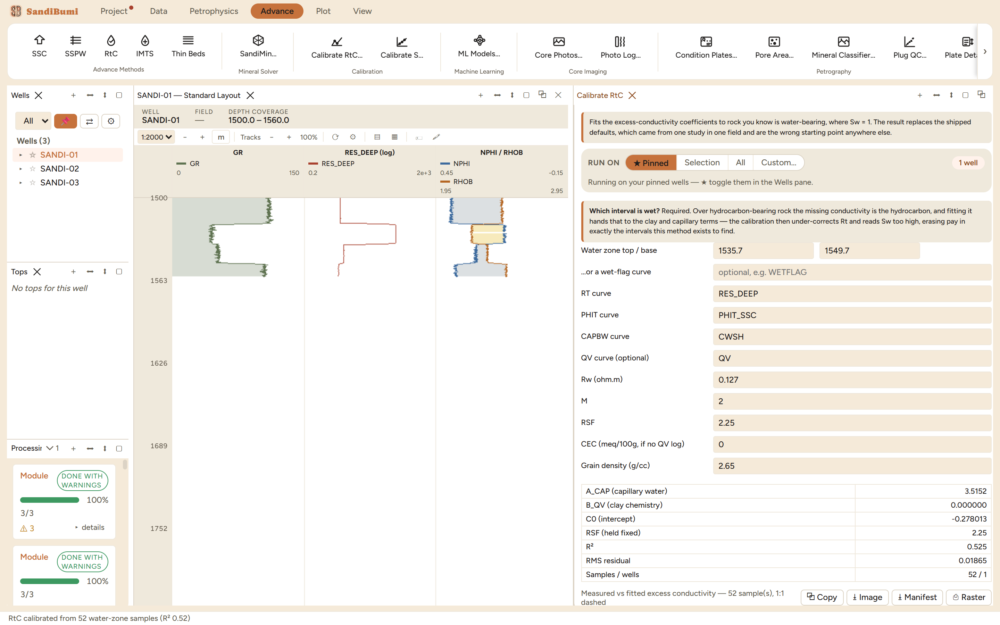
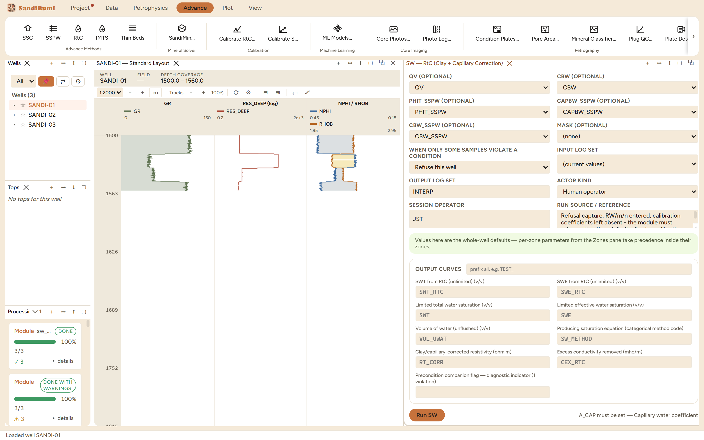
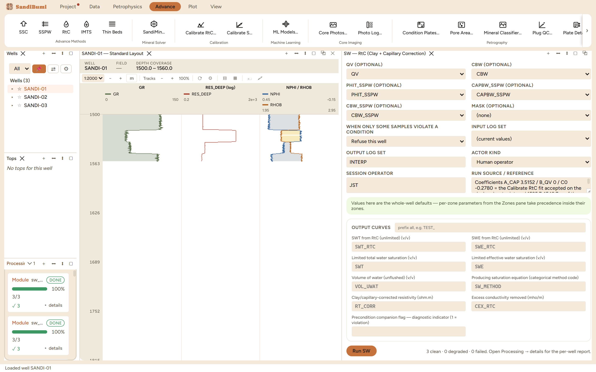

The RtC method: the first of the two low-resistivity saturation methods in this book. Low-resistivity, low-contrast pay computes wet on clean-sand equations because clay chemistry and capillary-held microporous water conduct current the equations attribute to free water. RtC measures that excess conductivity in rock declared water-bearing, regresses it against capillary-bound water and the clay charge, and subtracts it from every sample's measured conductivity before Archie runs:
Cex = (A_CAP·CAPBW + B_QV·Qv + C0) · PHIT · RSF Sw = [ Rw·(1/Rt − Cex) / PHIT^M ]^(1/N)
CAPBW is the capillary-bound water volume, which is why this method pairs naturally with the SSC chapter (its CWSH output is the declared input). Qv comes from a QV log when one exists, else from CEC, grain density and porosity. The correction is capped so the corrected resistivity stays finite, and a negative predicted excess clamps to zero rather than adding conductivity. Crucially, no calibration coefficients ship as defaults: a foreign calibration yields a smooth, plausible Sw that is simply wrong, with nothing on the surface to say so.
With everything entered except the coefficients, the pane refuses:
A_CAP must be set — Capillary water coefficient
The fix is Advance ▸ Calibrate RtC…, and its pane states the danger of skipping it better than any manual: fitted over hydrocarbon-bearing rock, the missing conductivity is the hydrocarbon, and handing it to the clay and capillary terms makes the calibration under-correct and erase pay in exactly the intervals the method exists to find.
The fit was run on the reference well's declared water interval, 1535.7 to 1549.7 m, the wet sand below the fluid contact (its purity checked first: zero gas-flagged samples inside). Inputs paired exactly with the run to come: PHIT_SSC, CAPBW from SSC's CWSH, Rw 0.127 (the median wet-sand apparent Rw on total porosity, re-derived live at 0.126), m 2, RSF 2.25 held fixed, and the shipped CEC 0, since this dataset carries no lab CEC and no QV log. The pane reports:
A_CAP 3.5152 B_QV 0.000000 C0 −0.278013 RSF (held fixed) 2.25 R² 0.525 RMS residual 0.01865 Samples / wells 52 / 1
and narrates its own honesty: 40 samples had no excess to explain (Rt above the clean-water baseline), the clay-chemistry term could not be fitted without Qv variation and is reported as zero with the capillary term absorbing any constant clay conductivity, and the coefficients are valid for RSF 2.25 only, because RSF multiplies the whole bracket and the four are not jointly identifiable. Pressing Apply writes all four as one batch of parameter overrides on the fitted well: the held-fixed constant travels with the coefficients, so they can never be paired with a different RSF by accident.


3 clean. The water-zone check that graded the Archie chapter now passes: wet-sand median SWT_RTC 0.9916, because the Rw was fitted on the same porosity system the equation runs on. The correction engages where the rock says it should: 262 of 1185 samples carry a positive excess (85, 91 and 86 per well), median 0.0088 mho/m, concentrated in the capillary-water-rich intervals the fit was built from; the gas sand reads 0.1564.
SELECT COUNT(*) FILTER (WHERE value > 0) FROM computed_curves WHERE curve_name = 'CEX_RTC' AND NOT isnan(value)
The precedence demonstration: with RSF changed to 1 in the pane, the reference well does not move at all (its engaged median stays 0.00749, because the accepted calibration is stored as zone-scoped overrides that outrank the pane), while the two unfitted wells scale by exactly 1/2.25 (0.0100 to 0.00444, 0.00922 to 0.0041). That is the one-transaction rule made visible: an accepted calibration cannot be half-changed from a pane. Restored, every number returns exactly.
